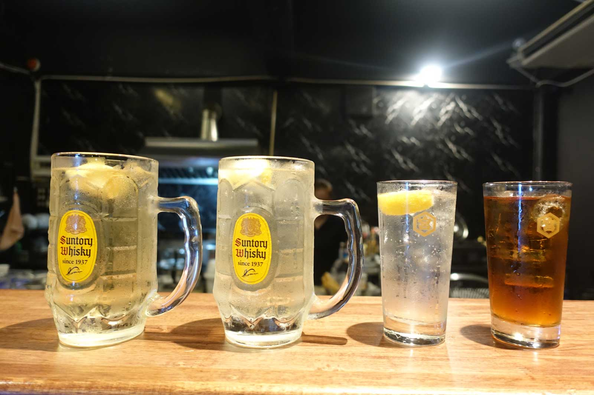
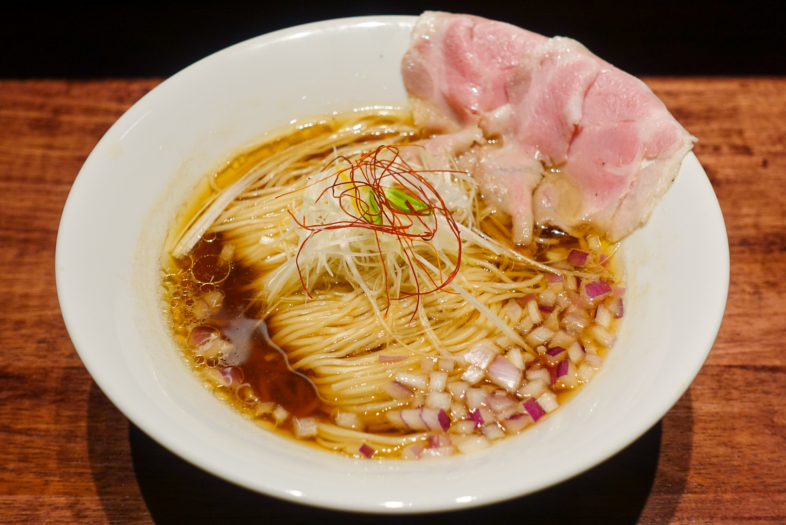
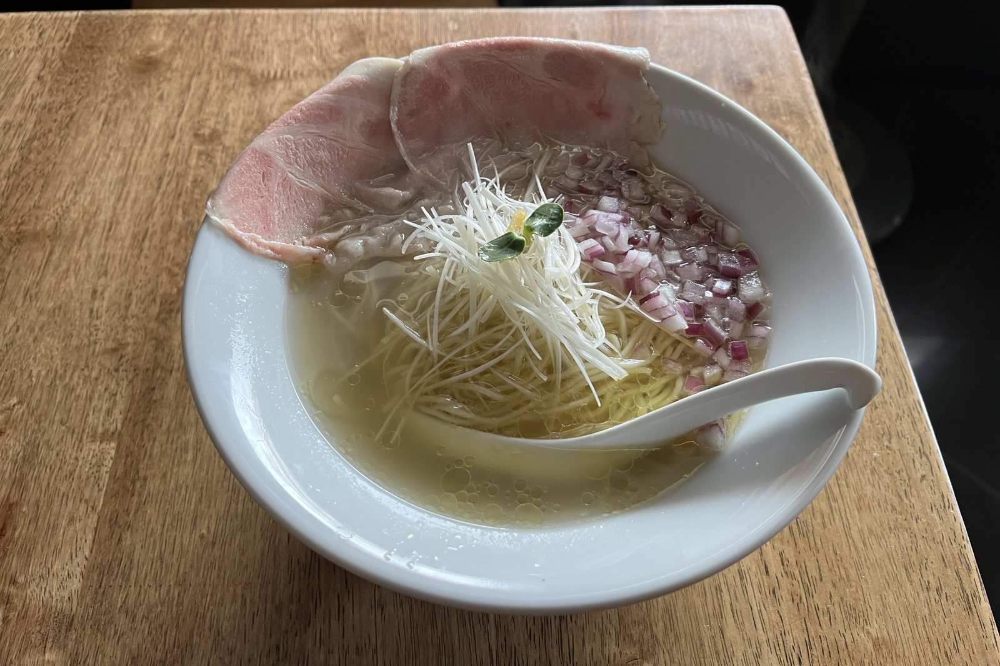
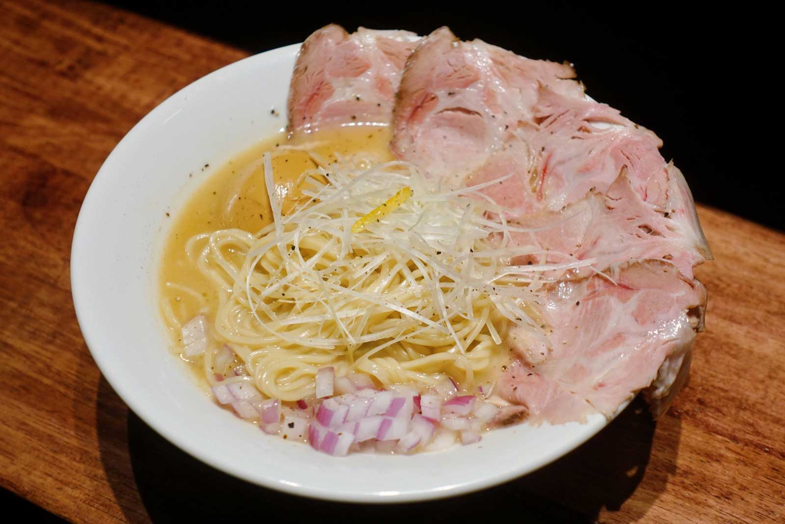
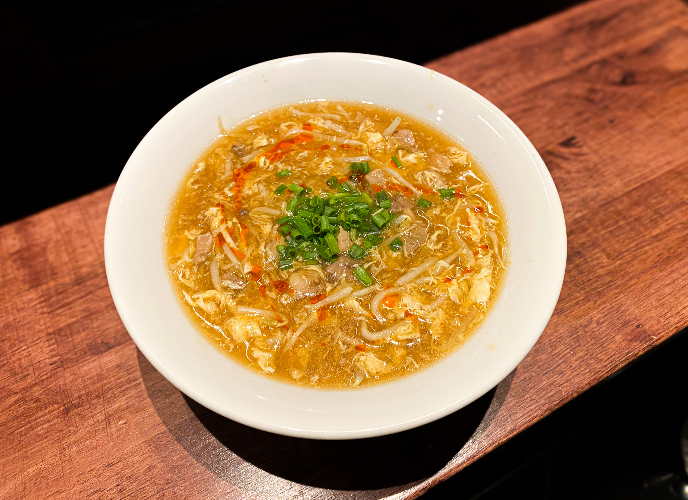
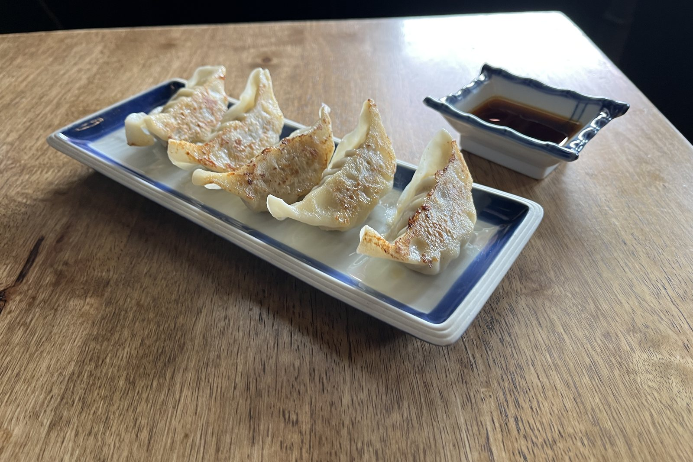
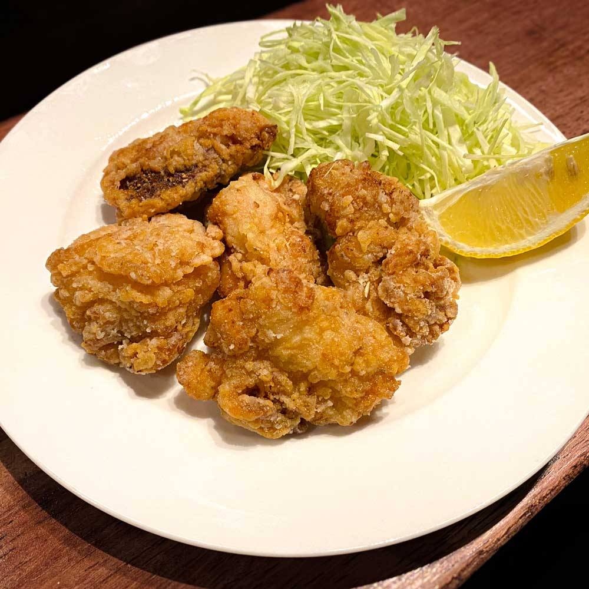
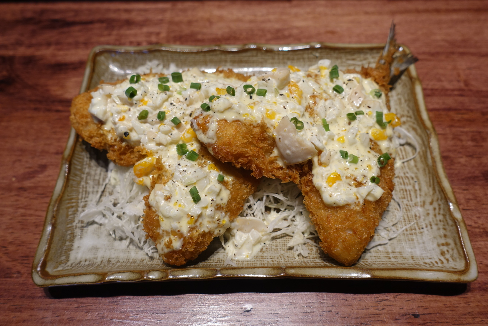
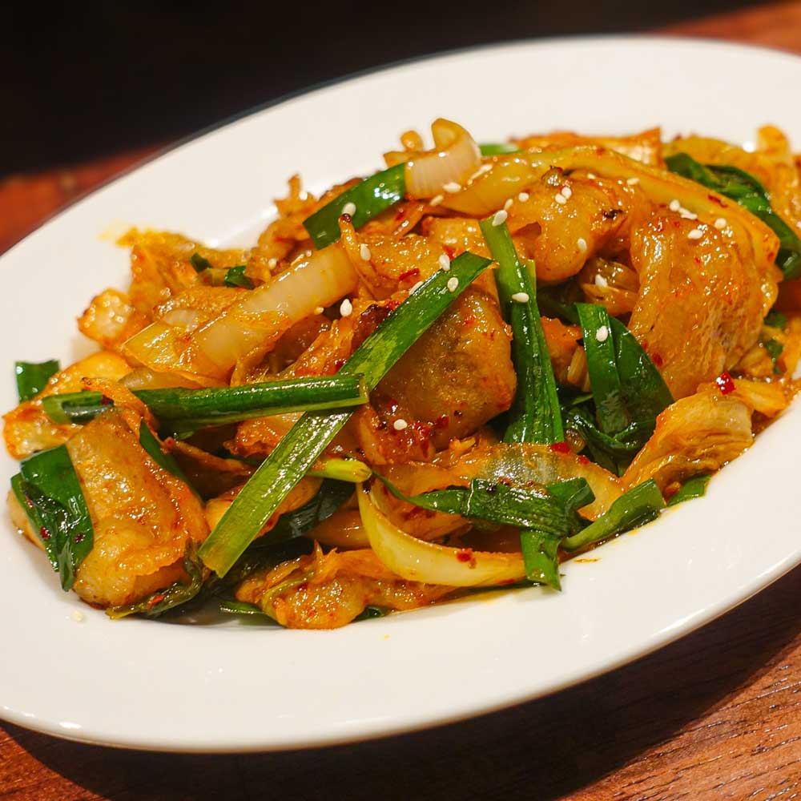
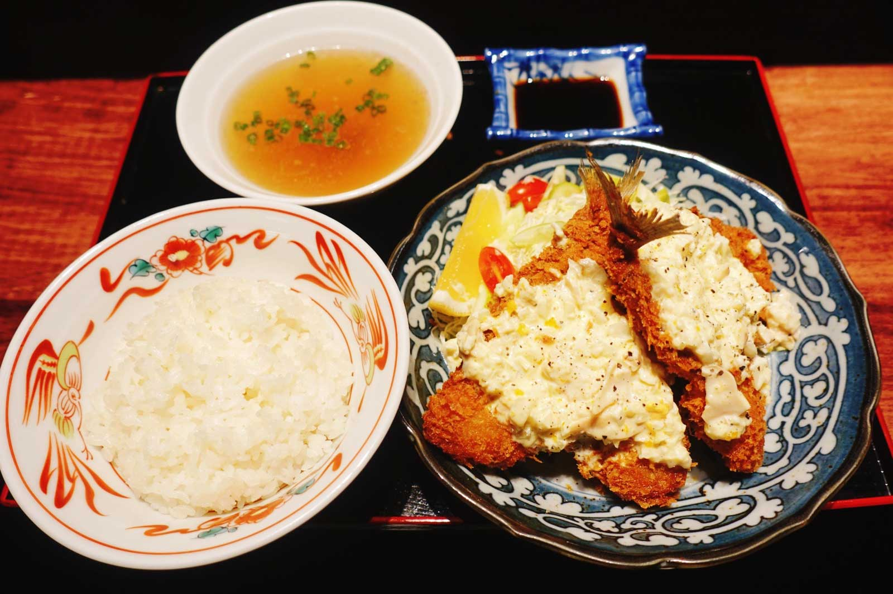

角ハイボール三得利角瓶威士忌苏打（日本进口）
฿130 350毫升。大杯700毫升 ฿220
使用日本进口的三得利角瓶威士忌调制。
大阪居酒屋 MENLABO酒場
从拉面开始，精选12道。
拉面
11:00–24:00供应（周二休息）。
鸡汤熬制，不添加化学调味料。

清澈的鸡汤配酱油，本店最受欢迎的一碗。
主要食材：鸡汤、酱油、面条。
฿179 全部配料 ฿219、特制 ฿270

同样的鸡汤，用盐调味，更能喝出鸡汤的鲜味。
主要食材：鸡汤、盐、面条。
฿179 全部配料 ฿219、特制 ฿270

长时间熬煮的浓厚鸡汤，可选盐味或酱油味。
主要食材：鸡汤、面条。
฿159 全部配料 ฿199、特制 ฿250

口味较辣，适合想痛快出汗的时候。
主要食材：鸡汤、面条、叉烧（猪肉）、鸡蛋、豆芽、辣油。
฿179
下酒菜
供应时间：15:00–24:00。
第一盘，通常是煎饺。

现煎的日式饺子。
主要食材：猪肉、饺子皮。
฿99

大块炸鸡，搭配啤酒或威士忌苏打都合适。
主要食材：鸡肉。面衣含小麦粉和鸡蛋。
฿139

搭配足量塔塔酱。
主要食材：竹荚鱼、面包糠、塔塔酱（含鸡蛋）。
฿159

下饭，也下酒。
主要食材：猪肉、泡菜。
฿159
午餐
供应时间：11:00–15:00。
附米饭和汤，米饭可免费加量。

现炸竹荚鱼配塔塔酱（含鸡蛋），附米饭和汤。
฿179
大块炸鸡（面衣含小麦粉和鸡蛋），附米饭和汤。
฿159
照片为主菜
酒水
15:00–24:00供应。
啤酒杯装角瓶威士忌苏打、柠檬烧酒苏打。

฿130 350毫升。大杯700毫升 ฿220
使用日本进口的三得利角瓶威士忌调制。
如有食物过敏，请在点餐时告知。店内主要使用泰语。